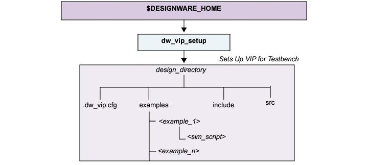

The remainder of this chapter describes the details of the different steps you performed during installation and setup, and consists of the following sections:
For more information on the order in which licenses are checked out for each VIP, refer to VC VIP AMBA Release Notes.
The licensing key must reside in files that are indicated by specific environment variables. For more information about setting these licensing environment variables, see Environment Variable and Path Settings.
2.5.1.0.1 License Polling
If you request a license and none are available, license polling allows your request to exist until a license becomes available instead of exiting immediately. To control license polling, you use the DW_WAIT_LICENSE environment variable as follows:
To enable license polling, set the DW_WAIT_LICENSE environment variable to 1.
To disable license polling, unset the DW_WAIT_LICENSE environment variable. By default, license polling is disabled.
2.5.1.0.2 Simulation License Suspension
All Synopsys Verification IP products support license suspension. Simulators that support license suspension allow a model to check in its license token while the simulator is suspended, then check the license token back out when the simulation is resumed.
This capability is simulator-specific; not all simulators support license check-in during suspension.
Environment Variable and Path Settings
The following are environment variables and path settings required by the AXI VIP verification models:
DESIGNWARE_HOME: The absolute path to where the VIP is installed.
DW_LICENSE_FILE - The absolute path to file that contains the license keys for the VIP product software or the port@host reference to this file.
SNPSLMD_LICENSE_FILE: The absolute path to file(s) that contains the license keys for Synopsys software (VIP and/or other Synopsys Software tools) or the port@host reference to this file.
For faster license checkout of Synopsys VIP software please ensure to place the desired license files at the front of the list of arguments to SNPSLMD_LICENSE_FILE.
LM_LICENSE_FILE: The absolute path to a file that contains the license keys for both Synopsys software and/or your third-party tools.
The Synopsys VIP License can be set in either of the 3 license variables mentioned above with the order of precedence for checking the variables being:
DW_LICENSE_FILE -> SNPSLMD_LICENSE_FILE -> LM_LICENSE_FILE, but also note If DW_LICENSE_FILE environment variable is enabled, VIP will ignore SNPSLMD_LICENSE_FILE and LM_LICENSE_FILE settings.
Hence to get the most efficient Synopsys VIP license checkout performance, set the DW_LICENSE_FILE with only the License servers which contain Synopsys VIP licenses. Also, include the absolute path to the third party executable in your PATH variable.
Simulator-Specific Settings
Your simulation environment and PATH variables must be set as required to support your simulator.
Determining Your Model Version
The following steps tell you how to check the version of the models you are using.
Verification IP products are released and versioned by the suite and not by individual model. The version number of a model indicates the suite version.
To determine the versions of VIP models installed in your $DESIGNWARE_HOME tree, use the setup utility as follows:
% $DESIGNWARE_HOME/bin/dw_vip_setup ‑i home
To determine the versions of VIP models in your design directory, use the setup utility as follows:
A design directory contains a version of VIP that is set up and ready for use in a testbench. You use the dw_vip_setup utility to create design directories. For full description of dw_vip_setup, see the The dw_vip_setup Utility.
If you move a design directory, the references in your testbenches to the include files will need to be revised to point to the new location. Also, any simulation scripts in the examples directory will need to be recreated.
A design directory gives you control over the version of Synopsys VIP in your testbench because it is isolated from the DESIGNWARE_HOME installation. When you want, you can use dw_vip_setup to update the VIP in your design directory. Figure 2‑2 shows this process and the contents of a design directory.
Figure 2‑2 Design Directory Created by dw_vip_setup
A design directory contains:
examples Each VIP includes example testbenches. The dw_vip_setup utility adds them in this directory, along with a script for simulation. If an example testbench is specified on the command line, this directory contains all files required for model, suite, and system testbenches.
include Language-specific include files that contain critical information for VIP models. This directory is specified in simulator command lines.
src VIP-specific include files (not used by all VIPs). This directory may be specified in simulator command lines.
.dw_vip.cfg A database of all VIP models being used in the testbench. The dw_vip_setup program reads this file to rebuild or recreate a design setup.
Do not modify this file because dw_vip_setup depends on the original contents.
When using a design_dir, you have to make sure that the DESIGNWARE_HOME that was used to setup the design_dir is the same one used in the shell when running the simulation. In other words when using a design_dir, you have to make sure that the SVT version identified in the design_dir is available in the DESIGNWARE_HOME used in the shell when running the simulation.
Setting Up a New VIP
After you have installed the VIP, you must set up the VIP for project and testbench use. All VIP suites contain various components such as transceivers, masters, slaves, and monitors depending on the protocol. The setup process gathers together all the required component files you need to incorporate into your testbench required for simulation runs.
You have the choice to set up all of them, or only specific ones. For example, the AXI VIP contains the following components.
axi_system_env_svt
axi_master_agent_svt
axi_slave_agent_svt
axi_interconnect_env_svt
1. UVM users are required to define the UVM macro UVM_DISABLE_AUTO_ITEM_RECORDING. AXI being a pipelined protocol (that is, previous transaction does not necessarily need to complete before starting new transaction), AXI VIP handles triggering the begin/end events and transaction recording. AXI VIP does not use the UVM automatic transaction begin/end event triggering and recording feature. If UVM_DISABLE_AUTO_ITEM_RECORDING is not defined, VIP issues a FATAL message.
You can set up either an individual component, or the entire set of components within one protocol suite. Use the Synopsys provided tool called dw_vip_setup for these tasks. It resides in $DESIGNWARE_HOME/bin.
To get help on dw_vip_setup, invoke the following:
% $DESIGNWARE_HOME/bin/dw_vip_setup --help
The following command adds a model to the directory design_dir.
This command sets up all the required files in /tmp/design_dir.
The utility dw_vip_setup creates three directories under design_dir which contain all the necessary model files. Files for every VIP are included in these three directories.
examples: Each VIP includes example testbenches. The dw_vip_setup utility adds them in this directory, along with a script for simulation. If an example testbench is specified on the command line, this directory contains all files required for model, suite, and system testbenches.
include: Language-specific include files that contain critical information for Synopsys models. This directory include/sverilog is specified in simulator commands to locate model files.
src: Synopsys-specific include files This directory src/sverilog/vcs must be included in the simulator command to locate model files.
Note that some components are top level and will setup the entire suite. You have the choice to set up the entire suite, or just one component such as a monitor.
Attention
There must be only one design_dir installation per simulation, regardless of the number of Synopsys Verification and Implementation IPs you have in your project. Do create this directory in $DESIGNWARE_HOME.
Installing and Setting Up More than One VIP Protocol Suite
All VIPs for a particular project must be set up in a single common directory once you execute the *.run file. You may have different projects. In this case, the projects can use their own VIP setup directory. However, all the VIPs used by that specific project must reside in a common directory.
The examples in this chapter call that directory as design_dir, but you can use any name.
In this example, assume you have the AXI suite set up in the design_dir directory. In addition to the AXI VIP, you require the Ethernet and USB VIP suites.
First, follow the previous instructions on downloading and installing the Ethernet VIP and USB suites.
Once installed, the Ethernet and USB suites must be set up in and located in the same design_dir location as AMBA. Use the following commands:
To specify other model names, consult the VIP documentation.
By default, all of the VIPs use the latest installed version of SVT. Synopsys maintains backward compatibility with previous versions of SVT. As a result, you may mix and match models using previous versions of SVT.
Updating an Existing Model
To add and update an existing model, do the following:
1. Install the model to the same location at which your other VIPs are present by setting the $DESIGNWARE_HOME environment variable.
2. Issue the following command using design_dir as the location for your project directory.
Removing Synopsys VIP Models from a Design Directory
This example shows how to remove all listed models in the design directory at “/d/test2/daily” using the model list in the file “del_list” in the scratch directory under your home directory. The dw_vip_setup program command line is:
where <scenario> is one of: all axi_slave_mem_diff_data_width_response_test axi_unaligned_backdoor_write_read_test base_test config_creator_test directed_4kboundary_test directed_test directed_write_read_data_cehck_wysiwyg_enable_test random_wr_rd_test reorder_wr_rd_test
<simulator> is one of: vcsmxvlog mtivlog vcsvlog vcszsimvlog vcsscvlog ncvlog vcszebuvlog vcsmxpcvlog vcsvhdl vcsmxpipvlog ncmvlog vcspcvlog
-32 forces 32-bit mode on 64-bit machines
-incdir use DESIGNWARE_HOME include files instead of design directory
-verbose enable verbose mode during compilation
-debug_opts enable debug mode for VIP technologies that support this option
You must have PA installed if you use the -pa or PA=1 switches.
The dw_vip_setup Utility
The dw_vip_setup utility:
Adds, removes, or updates AXI VIP models in a design directory.
Adds example testbenches to a design directory, the AXI VIP models they use (if necessary), and creates a script for simulating the testbench using any of the supported simulators.
Restores (cleans) example testbench files to their original state.
Reports information about your installation or design directory, including version information.
Supports Protocol Analyzer (PA).
Supports the FSDB wave format.
2.5.4.9.1 Setting Environment Variables
Before running dw_vip_setup, the following environment variables must be set:
DESIGNWARE_HOME – Points to where the Synopsys VIP is installed
2.5.4.9.2 The dw_vip_setup Command
You invoke dw_vip_setup from the command prompt. The dw_vip_setup program checks command line argument syntax and makes sure that the requested input files exist.
[‑p[ath] directory] The optional ‑path argument specifies the path to your design directory. When omitted, dw_vip_setup uses the current working directory.
switch The switch argument defines dw_vip_setup operation. Table 2‑1 lists the switches and their applicable sub-switches.
Table 2‑1 Setup Program Switch Descriptions
Switch
Description
‑a[dd] ( model [‑v[ersion] version] ) …
Adds the specified model or models to the specified design directory or current working directory. If you do not specify a version, the latest version is assumed. The model names are:
• axi_master_agent_svt
• axi_slave_agent_svt
• axi_interconnect_env_svt
• axi_system_env_svt
The ‑add switch causes dw_vip_setup to build suite libraries from the same suite as the specified models, and to copy the other necessary files from $DESIGNWARE_HOME.
‑r[emove] model
Removes all versions of the specified model or models from the design. The dw_vip_setup program does not attempt to remove any include files used solely by the specified model or models. The model names are:
• axi_master_agent_svt
• axi_slave_agent_svt
• axi_interconnect_env_svt
• axi_system_env_svt
‑u[pdate] ( model [‑v[ersion] version] ) …
Updates to the specified model version for the specified model or models. The dw_vip_setup script updates to the latest models when you do not specify a version. The model names are:
• axi_master_agent_svt
• axi_slave_agent_svt
• axi_interconnect_env_svt
• axi_system_env_svt
The ‑update switch causes dw_vip_setup to build suite libraries from the same suite as the specified models, and to copy the other necessary files from $DESIGNWARE_HOME.
The dw_vip_setup script configures a testbench example for a single model or a system testbench for a group of models. The program creates a simulator run program for all supported simulators.
If you specify a scenario (or system) example testbench, the models needed for the testbench are included automatically and do not need to be specified in the command.
Note: Use the ‑info switch to list all available system examples.
‑ntb
Not supported.
‑svtb
Use this switch to set up models and example testbenches for SystemVerilog UVM. The resulting design directory is streamlined and can only be used in SystemVerilog simulations.
‑c[lean] {scenario | model/scenario}
Cleans the specified scenario/testbench in either the design directory (as specified by the ‑path switch) or the current working directory. This switch deletes all files in the specified directory, then restores all Synopsys created files to their original contents.
-i/nfo design |
home[:<product>[:<version>[:<meth
odology>]]]
Generate an informational report on a design directory or VIP installation.
design: If the '-info design' switch is specified, the tool displays product
and version content within the specified design directory to standard output.
This output can be captured and used as a modellist file for input to this tool to
create another design directory with the same content.
home: If the '-info home' switch is specified, the tool displays product,
version, and example content within the VIP installation to standard output.
Optional filter fields can also be specified such as <product>, <version>, and
<methodology> delimited by colons (:). An error will be reported if a
nonexistent or invalid filter field is specified. Valid methodology names
include: OVM, RVM, UVM, VMM and VLOG.
‑h[elp]
Returns a list of valid dw_vip_setup switches and the correct syntax for each.
model
Synopsys AXI VIP models are:
• axi_master_agent_svt
• axi_slave_agent_svt
• axi_interconnect_env_svt
• axi_system_env_svt
The model argument defines the model or models that dw_vip_setup acts upon. This argument is not needed with the ‑info or ‑help switches. All switches that require the model argument may also use a model list.
You may specify a version for each listed model, using the ‑version option. If omitted, dw_vip_setup uses the latest version. The ‑update switch ignores model version information.
-b/ridge
Updates the specified design directory to reference the current DESIGNWARE_HOME installation. All product versions contained in the design directory must also exist in the current DESIGNWARE_HOME installation.
-pa
Enables the run scripts and Makefiles generated by dw_vip_setup to support PA. If this switch is enabled, and the testbench example produces FSDB files, PA will be launched and the FSDB files will be read at the end of the example execution.
For run scripts, specify -pa.
For Makefiles, specify -pa = 1.
-waves
Enables the run scripts and Makefiles generated by dw_vip_setup to support the fsdb waves option . To support this capability, the testbench example must generate an FSDB file when compiled with the WAVES Verilog macro set to fsdb, that is, +define+WAVES=\"fsdb\". If a .fsdb file is generated by the example, the Verdi nWave viewer will be launched.
For run scripts, specify -waves fsdb.
For Makefiles, specify WAVES=fsdb.
-doc
Creates a doc directory in the specified design directory which is populated
with symbolic links to the DESIGNWARE_HOME installation for documents
related to the given model or example being added or updated.
-methodology <name>
When specified with -doc, only documents associated with the specified
methodology name are added to the design directory. Valid methodology
names include: OVM, RVM, UVM, VMM, and VLOG.
-copy
When specified with -doc, documents are copied into the design directory, not
linked.
-s/uite_list <filename>
Specifies a file name which contains a list of suite names to be added, updated or removed in the design directory. This switch is valid only when following an operation switch, such as, -add, -update, or -remove. Only one suite name per line and each suite may include a version selector. The default version is 'latest'. This switch is optional, but if given the filename argument is required. The lines in the file starting with the pound symbol (#) will be ignored.
-m/odel_list <filename>
Specifies a file name which contains a list of model names to be added, updated or removed in the design directory. This switch is valid only when following an operation switch, such as, -add, -update, or -remove. Only one model name per line and each model may include a version selector. The default version is 'latest'. This switch is optional, but if given the filename argument is required. The lines in the file starting with the pound symbol (#) will be ignored.
-simulator <vendor>
When used with the -example switch, only simulator flows associated with the specified vendor are supported with the generated run script and Makefile.
Note: Currently the vendors VCS, MTI, and NCV are supported.
The dw_vip_setup program treats all lines beginning with “#” as comments.
AMBA SVT VIP implementation does not depend on the macro UVM_PACKER_MAX_BYTES. However, if UVM pack or unpack operation needs to be performed on the transaction handle in your testbench, then UVM_PACKER_MAX_BYTES macro needs to be defined and set to an optimal value in your testbench. For example, if VIP title 1 needs UVM_PACKER_MAX_BYTES to be set to 8192, and VIP title 2 needs UVM_PACKER_MAX_BYTES to be set to 500000, you need to set UVM_PACKER_MAX_BYTES to 500000.
vcs_run_options:
Required: +UVM_TESTNAME=$scenario
The “scenario” is the UVM test name you pass to VCS.